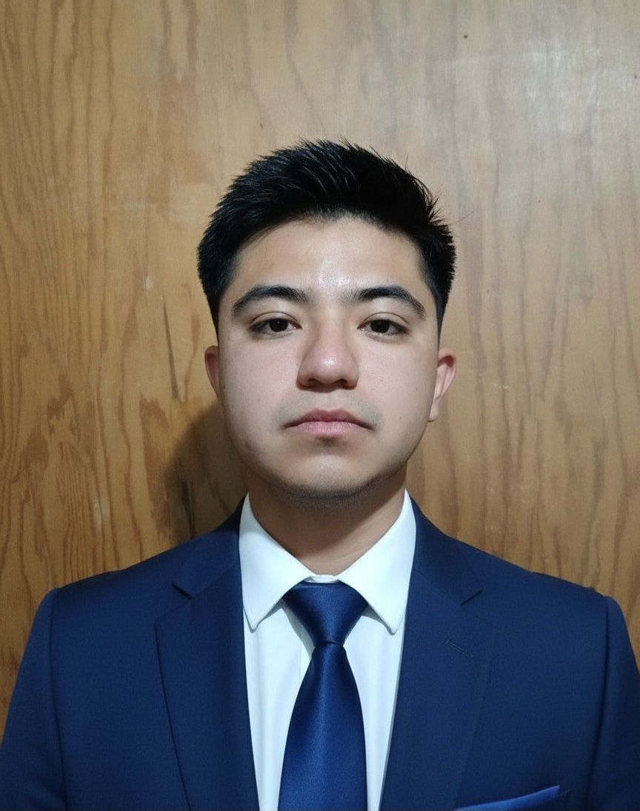

Thomas Mitchel
Gerente

Acerca de mí
Nacido y criado en Cuernavaca, Mor., con 27 años de edad, he tenido la oportunidad de participar en el desarrollo y crecimiento de las empresas para las que he trabajado. Soy un líder nato, motivo a mi equipo, doy soluciones y sé tomar decisiones en momentos de crisis.
Logros
Presta Prenda - Líder de Tienda (2025--)
- Llevé a la sucursal a ser la número uno en colocación luego de ser la última (décimo puesto de diez.) pasando de 2.1 Millones a 3.4 Millones ($) en 4 meses.
- Sané la cartera, logré el mínimo de adjudicados para la sucursal al recuperar clientes morosos.
- Implementé un sistema para llevar un control y gestión de nuestros clientes
- Coordiné con el equipo una campaña de publicidad a través de redes sociales (Facebook,TikTok) y Cambaceo.
- Mantuve una excelente relación con los clientes logrando el mayor crecimiento de clientes nuevos en la zona.
Banco Azteca - Asesor Financiero (2024--2025)
- Logré ser el número 1 en colocación de AFORES durante dos meses.
- Logré ampliar la captación de inversionistas, creciendo mi cartera de 0 a 40 millones en cuatro meses.
- Fuí el número uno en colocación de seguros (personales y automotrices)
- Ayudé a mi equipo a colocar créditos individuales.
- Durante mi paso por Banco Azteca, aprendí a arquear a los cajeros, contar efectivo y llevar protocolos de seguridad.
MOBIL - Encargado de estación (2022--2024)
- Junto con el Gerente de estación logré implementar el protocolo de servicio logrando un 100% en la evaluación de Mistery Shopper.
- Impulsé la rotación de nuestro productos (aceites, pinos) siendo el vendedor número 1.
- Logré terminar con malos procesos dentro de la estación.
- Capacité a mi equipo para la atención y servicio al cliente.
- Logré junto con mi equipo mejorar el ticket promedio.
Suit Office.
Planes de trabajo
Manejo de KPIs
Inglés B2